VAG: Dual-Stream Video-Action Generation for Embodied Data Synthesis
1. 阅读定位与组会导读
| 导读项 | 这篇论文回答什么 | 读的时候重点盯哪里 |
|---|---|---|
| 研究对象 | 给定初始图像和语言指令，同步生成约 10 秒的机器人视频和对应动作轨迹。 | 它不是主要做在线闭环 policy，而是做可用于 policy 训练的数据合成引擎。 |
| 核心问题 | World Model 能生成视频但没有动作；两阶段 video-to-action 会产生误差累积和跨模态不一致。 | 看 VAG 如何让动作生成过程在每个 denoising step 读取视频 latent。 |
| 主要贡献 | 统一 flow-matching 双流框架、同步视频/动作去噪、adaptive 3D pooling 桥接、合成数据提升 VLA 泛化。 | 重点看方法的方向性：视频 latent 指导动作，但动作还没有反向指导视频。 |
| 和 UVA/CoVAR 的关系 | UVA 偏统一 latent 与多功能 policy；CoVAR 偏保留 video DiT 并联 action DiT；VAG 偏合成长视频-动作数据。 | VAG 的定位更接近“数据引擎”，而不是把生成模型直接作为高频控制器。 |
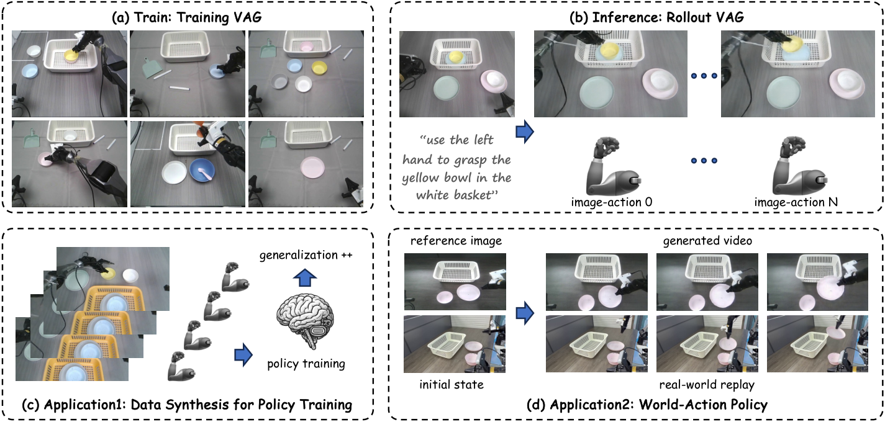
2. 背景：World Model 为什么还不能直接训练 policy
2.1 VLA/VA policy：能执行，但数据贵
Vision-Language-Action 模型通常以闭环方式运行：观察当前图像和状态，预测 1 到 2 秒动作，执行后再用新观测预测。它们已经能完成复杂任务，但训练需要大量人类遥操作数据。每个新场景和新任务都要采集 demonstrations，这正是本文要缓解的数据瓶颈。
2.2 World Model：视频丰富，但没有动作标签
现代视频生成/World Model 可以生成丰富视觉 rollout，提供多样化场景。但如果生成结果只有视频，没有配对 action trajectory，就不能直接当 robot policy 训练数据。对机器人来说，视频里的“看起来发生了什么”和实际电机控制信号之间还隔着一层动作对齐问题。
2.3 两阶段 World-Action：能补动作，但容易错位
两阶段方案先用 World Model 生成视频，再用 IDM、AnyPos 等方法从视频回归动作。这能得到较长 video-action pairs，但会引入异构模型之间的误差传递：视频生成错一点，动作回归再错一点；更麻烦的是视频和动作不是在同一个生成过程中同步决定的，因此容易出现跨模态不一致。
2.4 VAG 的定位
VAG 的目标是作为 World-Action data synthesis engine：它不是只把未来视频作为 action prediction 的辅助监督，而是直接输出可用于 policy training 的 video-action pair。论文强调这种生成数据还能提升下游 VLA 的 OOD 泛化。
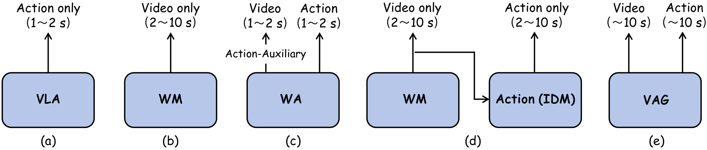
3. 方法详解：flow matching、双流同步去噪与 3D pooling
3.1 Flow Matching 基础
VAG 使用 flow matching 而不是传统 diffusion loss 来描述从数据到噪声的路径。给定数据样本 $\mathbf{x}$、高斯噪声 $\boldsymbol{\epsilon}\sim\mathcal{N}(0,I)$ 和 timestep $t\in[0,1]$，插值 latent 为：
直觉：
当 $t=0$ 时是干净数据，当 $t=1$ 时是纯噪声，中间是直线插值。
对应 ground-truth velocity 是：
模型预测 velocity，并用 MSE 训练：
阅读提醒：
$\mathbf{c}$ 包括文本、参考图像等条件。VAG 的视频分支和动作分支都套用这个 velocity matching 思想，只是数据空间不同。
3.2 视频分支：Cosmos-Predict2 的 video flow
视频分支继承 Cosmos-Predict2 (2B-Video2World)。输入包括首帧图像和语言指令，输出未来视频 $\mathbf{V}\in\mathbb{R}^{C\times T\times H\times W}$。实验中 $T=93$，视频频率 10 Hz，约等于 10 秒；图像 resize 到 $H=432,W=768$，RGB 所以 $C=3$。
原始视频经 VAE tokenizer 压缩，时间/高度/宽度压缩率分别为 $4\times 8\times 8$，得到： $\mathbf{z}\in\mathbb{R}^{C'\times((T-1)/4+1)\times\lfloor H/8\rfloor\times\lfloor W/8\rfloor}$。 论文设置 $C'=16$。噪声 latent 与首帧 latent prefix 拼接后输入 DiT；文本由 T5-XXL 编码，并通过 cross-attention 注入；推理时使用 classifier-free guidance。
3.3 动作分支：同步去噪 + 全局视频条件
动作分支预测 $\mathbf{A}\in\mathbb{R}^{T\times D}$。AgiBot G1 双臂数据中 $D=16$；LIBERO 单臂仿真中 $D=7$；自采 Agilex 双臂数据中 $D=14$。动作分支从高斯噪声 $\boldsymbol{\epsilon}_a\in\mathbb{R}^{T\times D}$ 开始，用改造自 Diffusion Policy 的 1D U-Net 去噪。
关键设计是：动作分支在每个 denoising step 都接收视频分支预测出的当前 clean latent $\mathbf{z}_0$。VAG 先对 $\mathbf{z}_0$ 做 adaptive 3D pooling，把整个时空 latent 压成 $\mathbb{R}^{C'\times1\times1\times1}$，reshape 成 $\mathbb{R}^{1\times C'}$，再重复/扩展成 $\mathbf{e}\in\mathbb{R}^{1\times C''}$。论文设置 $C''=132$。这个 $\mathbf{e}$ 与 timestep embedding 一起作为 U-Net 的条件。
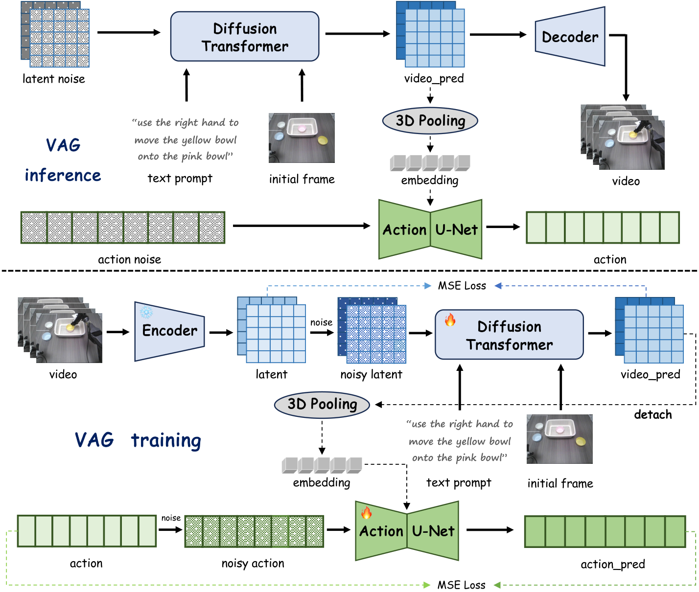
3.4 训练损失
训练时，VAG 使用带动作的视频轨迹和文本指令。对于每条 ground-truth video，论文使用 Qwen2.5-VL 自动抽取描述机器人行为的文本指令，再用 T5-XXL 编码。模型初始化自底层视频生成模型，以保留视觉先验。
视频分支损失：
$$ \mathcal{L}(\theta_1)=\left\|\phi_1(\mathbf{D}(\mathbf{z}';\theta_1))-\mathbf{z}\right\|^2. $$含义：
$\mathbf{D}$ 是 DiT，$\mathbf{z}'$ 是加噪视频 latent，$\phi_1$ 表示从 DiT 输出重建 clean latent 的过程。
动作分支损失：
$$ \mathcal{L}(\theta_2)=\left\|\phi_2(\mathbf{U}(\mathbf{A}';\theta_2))-\mathbf{A}\right\|^2. $$含义：
$\mathbf{U}$ 是 1D U-Net，$\mathbf{A}'$ 是同噪声强度扰动后的动作。动作分支条件来自 detached clean video latent，说明训练中动作 loss 不反向驱动视频分支。
3.5 训练/推理伪代码
训练阶段：
for each video-action trajectory:
use Qwen2.5-VL to obtain text instruction
encode text with T5-XXL
encode video V with VAE into latent z
add flow-matching noise to z -> z'
video DiT predicts clean latent from z', first-frame prefix, text
adaptive 3D pool predicted clean video latent into global embedding e
add matched noise to action sequence A -> A'
action 1D U-Net predicts clean action from A', timestep, e
optimize video latent MSE + action MSE
推理阶段：
given initial image and instruction:
initialize video noise and action noise
for N = 35 synchronized denoising steps:
video branch predicts current clean video latent z0
pool z0 into global condition e
action branch denoises action with e
decode final video latent into video
output synchronized video V and action A4. 实验结果：生成质量、轨迹 replay、VLA 预训练
4.1 实验设置
| 项目 | 设置 |
|---|---|
| 视频基础模型 | Cosmos-Predict2 (2B-Video2World)，生成 480P、10 Hz 视频。 |
| 生成 horizon | $T=93$ video-action frames，约 10 秒。 |
| 输入分辨率 | 视频 resize 到 $432\times768$。 |
| latent channel | $C'=16$。 |
| 动作条件 embedding | $C''=132$。 |
| 推理 denoising steps | $N=35$。 |
| 训练资源 | 8 张 NVIDIA H20 GPU，batch size 每 GPU 1，训练 40,000 iterations。 |
4.2 数据集
| 数据集 | 规模与任务 | VAG 使用方式 |
|---|---|---|
| AgiBot | 大型真实机器人数据集，1M trajectories、217 tasks、五类部署场景。 | 只使用 AgiBot G1 双臂 humanoid 数据，1794 个训练 video-action pairs，200 个测试，动作维度 $D=16$。 |
| LIBERO | 仿真 manipulation benchmark，含 Spatial/Object/Goal/Long 子集。 | 选 400 个训练 pairs、50 个测试 pairs；单臂机器人动作维度 $D=7$；使用 head 和 wrist cameras 拼接视频。 |
| Self-collected | Agilex Cobot Magic 双臂机器人数据。 | 动作维度 $D=14$；131 samples 用于 VAG 训练，20 samples 用于 VLA 训练。 |
4.3 视频生成质量
VAG 与 SVD、Wan2.2、Cosmos-Predict2 (CP2) 比较 AgiBot 上的视频生成质量。VAG 在 FVD、LPIPS、PSNR 上最好，FID 接近 Wan2.2，SSIM 不如 Wan2.2 但优于 SVD/CP2。这个结果说明在机器人数据上 post-training 后，VAG 没有因为加入动作分支而牺牲视频质量。
| 方法 | FVD ↓ | FID ↓ | LPIPS ↓ | SSIM ↑ | PSNR ↑ |
|---|---|---|---|---|---|
| SVD | 1311 | 150 | 0.421 | 0.339 | 12.7 |
| Wan2.2 | 1152 | 129 | 0.325 | 0.612 | 14.5 |
| CP2 | 988 | 135 | 0.352 | 0.427 | 14.2 |
| VAG | 965 | 130 | 0.320 | 0.512 | 15.1 |
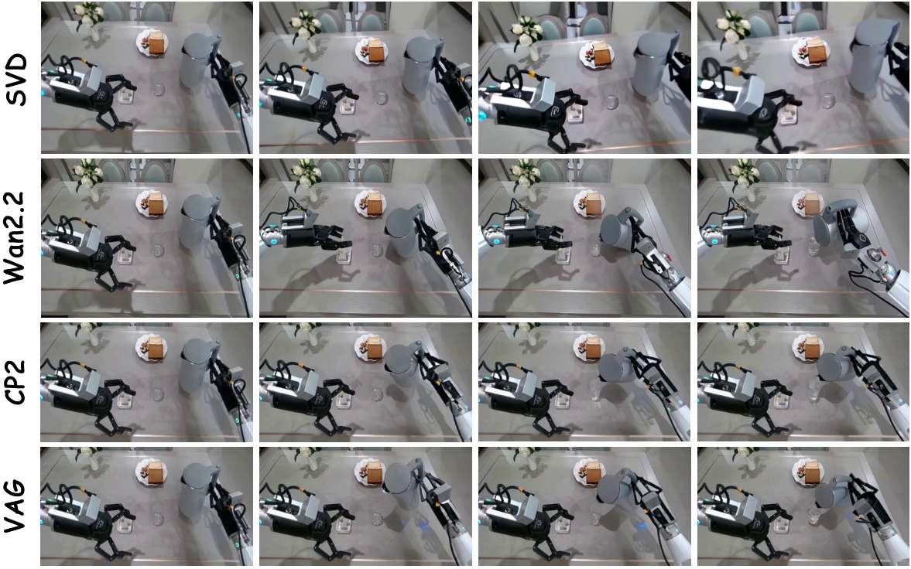
4.4 动作生成：对比两阶段回归
动作 baselines 是两阶段方案：先使用 VAG-Video 生成视频，再用 ResNet 或 AnyPos 从视频回归动作。VAG 的同步生成在 AgiBot 和 LIBERO 上都取得最低 Euclidean Distance 和最高 Success Rate。Success Rate 的定义是每个维度误差都低于 0.2 才算成功。
| 方法 | AgiBot ED ↓ | AgiBot SR ↑ | LIBERO ED ↓ | LIBERO SR ↑ |
|---|---|---|---|---|
| VAG-Video + ResNet | 1.54 | 8% | 0.87 | 37% |
| VAG-Video + AnyPos | 0.98 | 29% | 0.55 | 66% |
| VAG | 0.81 | 45% | 0.38 | 79% |
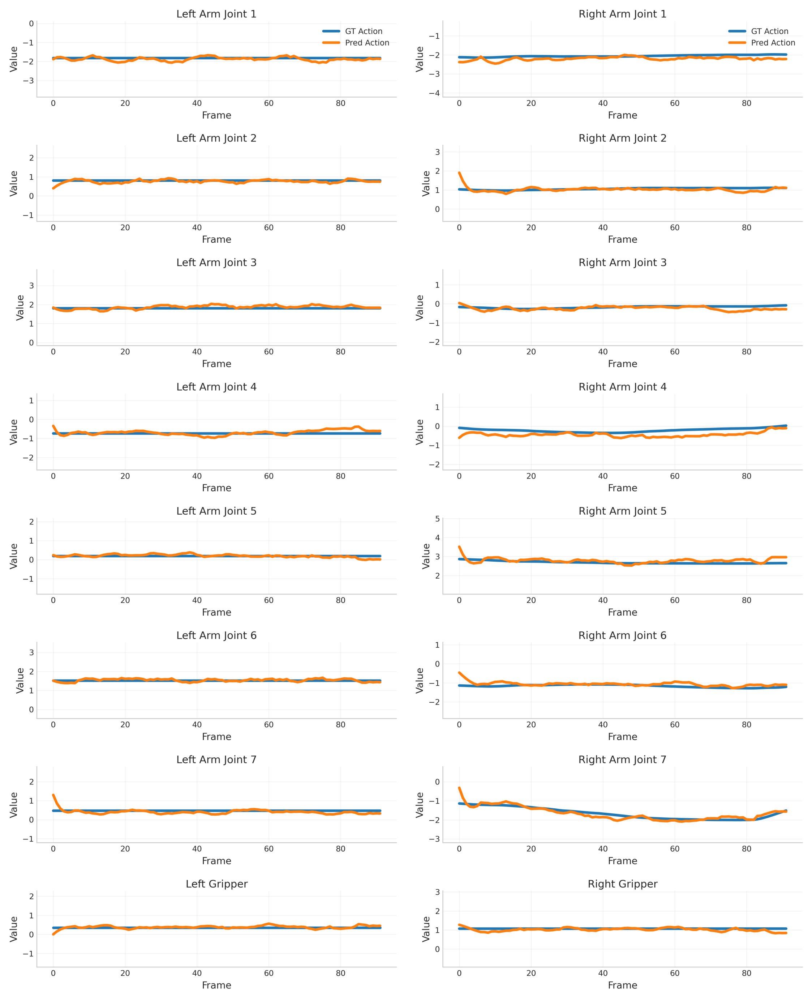
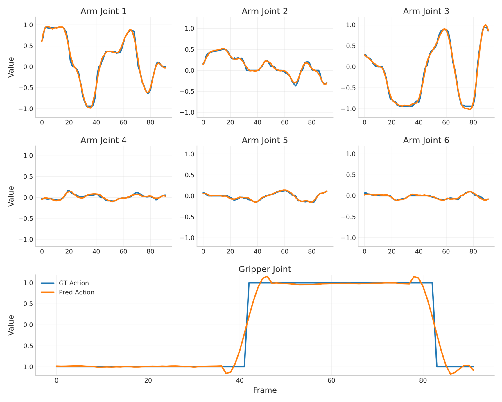
4.5 LIBERO 轨迹 replay
在 LIBERO benchmark 上，VAG 不只比较动作误差，还把生成动作 replay 到仿真里看任务成功率。VAG 在 Spatial/Object/Goal/Long 四个子集都优于两阶段方法，平均 replay success 从 AnyPos 的 54% 提升到 62%。
| 方法 | Spatial ↑ | Object ↑ | Goal ↑ | Long ↑ | Avg ↑ |
|---|---|---|---|---|---|
| VAG-Video + ResNet | 33 | 34 | 23 | 10 | 25 |
| VAG-Video + AnyPos | 59 | 62 | 56 | 39 | 54 |
| VAG | 70 | 72 | 64 | 42 | 62 |
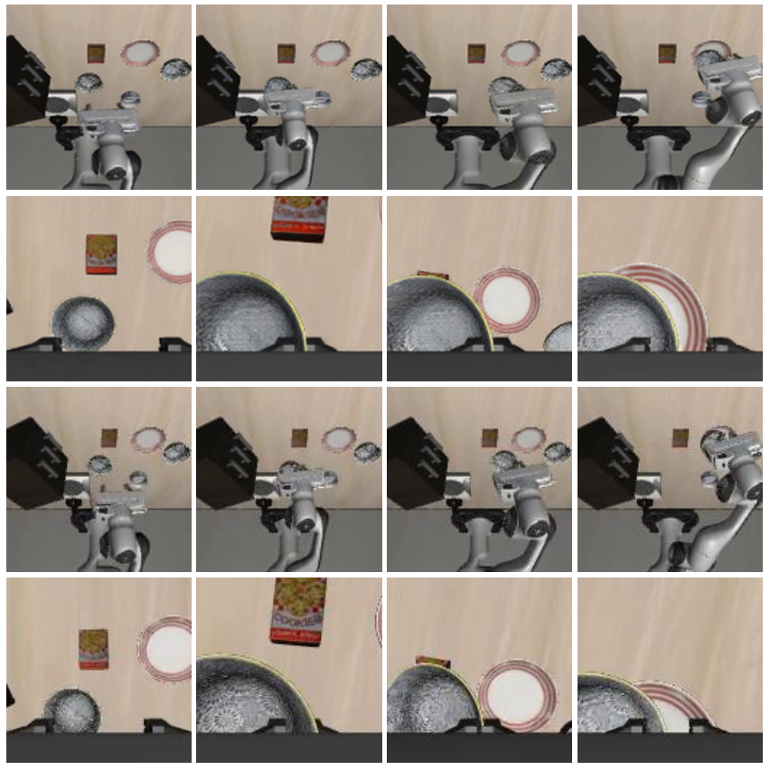
4.6 用合成数据提升 VLA 泛化
论文最有应用价值的实验是 VLA pretraining。作者在自采数据上先用 131 个样本训练 VAG，再从首帧和文本 prompt 生成合成 video-action pairs，形成 $\mathcal{X}_{syn}$。下游 VLA 为 $\pi_{0.5}$：baseline 只用 20 个真实 samples $\mathcal{X}_b$ 训练 10,000 iterations；增强版本先在 VAG 合成数据上 pretrain 到收敛，再用同样的 $\mathcal{X}_b$ finetune 10,000 iterations。
真实机器人 tableware pick-and-place 中，20 次 trials 里 baseline $\pi_{0.5}$ 成功 7 次，即 35%；$\pi_{0.5}$-w-VAG-pretrain 成功 11 次，即 55%，绝对提升 20%。作者指出增强模型在物体位置或颜色变化时泛化更好，并且没有出现 baseline 训练 loss 下降但部署过拟合的问题。
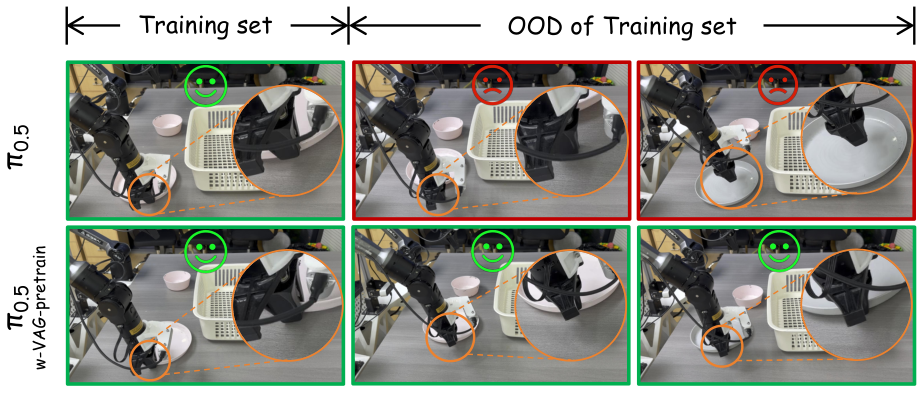
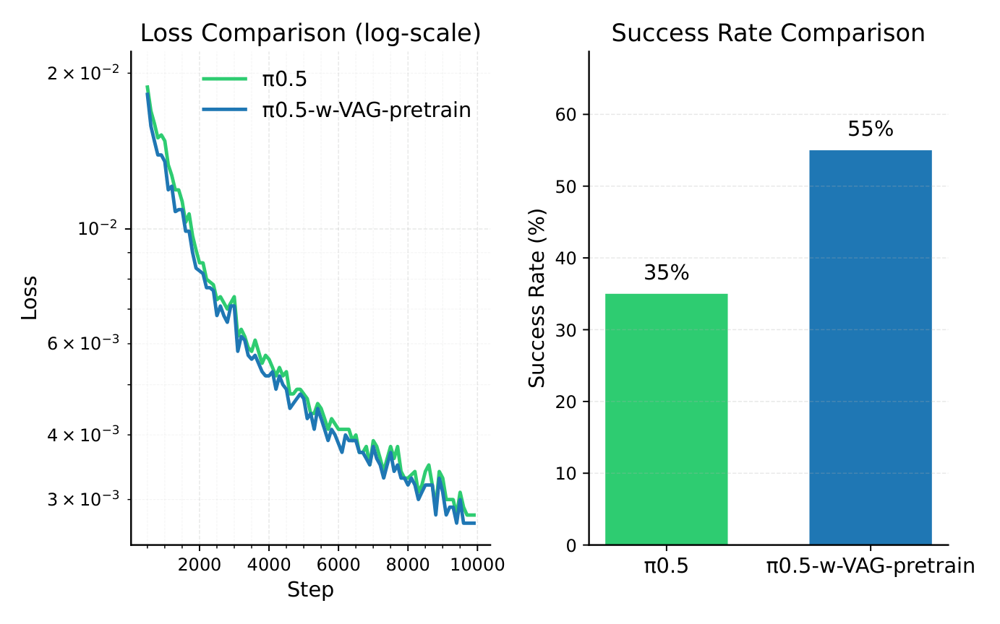
4.7 作为 World-Action policy 直接 replay
VAG 还被用于“像 policy 一样”直接生成动作并部署到 Agilex robot。输入是头部相机图像和文本指令，输出视频与动作；动作轨迹被 replay 到真实机器人上。论文展示左臂、右臂、双臂三类 manipulation，说明 VAG 的动作并非只适合离线训练，也具有一定可执行性。
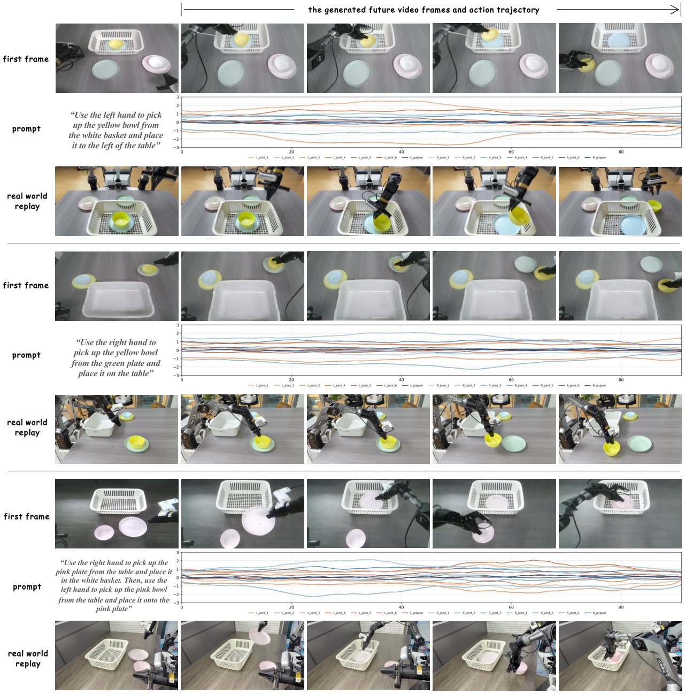
5. 图表精读
5.1 Fig. 2：这篇论文的位置非常清楚
Fig. 2 把 VAG 和四条路线区分开：VLA 是 policy，WM 是视频生成，WA-policy 是用未来视频辅助动作，WM+IDM 是两阶段合成数据。VAG 的独特定位是“直接合成训练数据”，也就是把 video-action pair 本身作为输出目标。
5.2 Fig. 3：动作分支依赖的是 clean latent，不是最终视频
VAG 与两阶段方法最重要的差异在 Fig. 3：动作不是从 decode 后的 RGB 视频再回归，而是在每个 denoising step 读取视频分支当前预测的 clean latent。这避免了先生成完整视频再反推动作的滞后与误差累积。
5.3 表 2：AnyPos 已经很强，但同步生成仍更好
在动作表中，VAG-Video + AnyPos 已经比 ResNet 强很多，说明强视觉回归器可以缓解两阶段问题。但 VAG 仍在 AgiBot 和 LIBERO 上同时降低 ED、提升 SR，支持“跨模态同步生成比后验动作回归更一致”的主张。
5.4 Fig. 9：VLA 预训练实验很诱人，但样本数还小
35% 到 55% 的提升是论文最亮眼结果之一。不过这个实验使用 131 个 VAG 训练样本和 20 个 VLA 真实训练样本，trial 总数为 20。它证明了方向可行，但还不能说明在更大任务库、更长 horizon 或多机器人上的稳定收益。
5.5 训练 loss 曲线
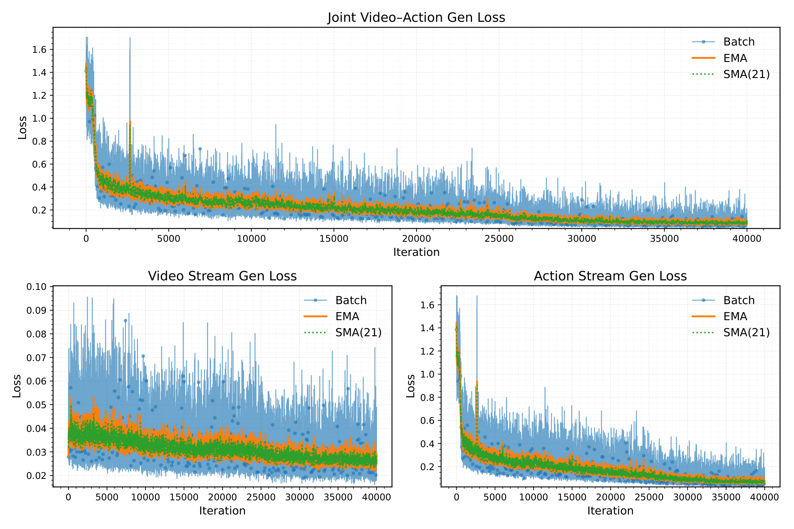
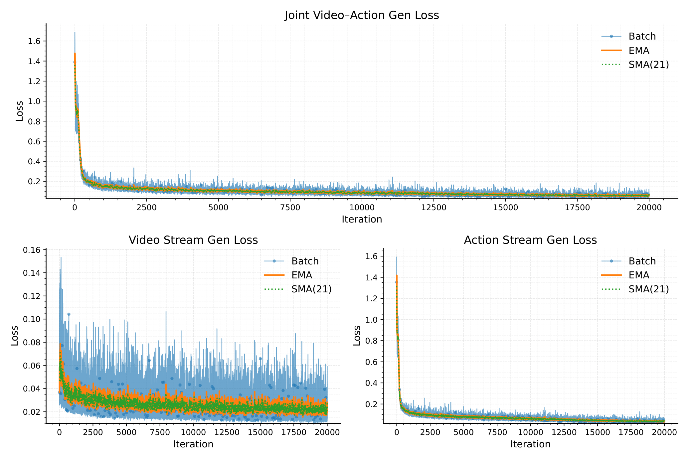
6. 复现清单与工程细节
6.1 可直接抽取的超参数
| 项目 | 值 |
|---|---|
| 基础视频模型 | Cosmos-Predict2 (2B-Video2World) |
| 视频帧数 | $T=93$ |
| 视频频率 | 10 Hz |
| 生成时长 | 约 10 秒 |
| 视频 resize | $432\times768$ |
| VAE 压缩率 | time/height/width = $4\times8\times8$ |
| 视频 latent channel | $C'=16$ |
| 动作条件 embedding | $C''=132$ |
| 推理步数 | $N=35$ denoising steps |
| 文本生成 | Qwen2.5-VL 从 ground-truth video 抽取 instruction |
| 文本编码 | T5-XXL |
| 动作 denoiser | 改造自 Diffusion Policy 的 1D U-Net |
| 训练资源 | 8 NVIDIA H20 GPUs，batch size 1/GPU，40,000 iterations |
6.2 复现缺口
- 官方代码缺失：当前 arXiv/source 未给出 VAG 官方 repo，因此训练日程、optimizer、learning rate、CFG scale 等无法完全确认。
- Cosmos-Predict2 改造细节：视频 DiT 如何 post-train、哪些层 finetune、prefix frame 如何拼接，需要代码级说明。
- 动作归一化：AgiBot/Agilex/LIBERO 的动作尺度、关节/末端位姿格式、双臂拼接顺序没有在正文完整展开。
- Success Rate 阈值：正文说明每维误差低于 0.2 算成功，但不同数据集动作单位不同，阈值的物理含义需要补充。
- 合成数据规模：$\mathcal{X}_{syn}$ 的具体样本数、prompt 采样、多样性增强方式未详细列出。
- 真实 replay 安全策略：直接执行生成动作时是否有过滤、插值、限幅、碰撞保护，正文没有细节。
6.3 与 UVA/CoVAR 的技术差异
| 方法 | 核心结构 | 主要目标 | 关键 trade-off |
|---|---|---|---|
| UVA | 共享 video-action latent，解耦 video/action diffusion heads。 | 一个模型支持 policy、video、forward/inverse dynamics。 | 统一功能强，但不同任务 mask/objective 可能冲突。 |
| CoVAR | 保留预训练 video DiT，并联 Action DiT，用 Bridge Attention 交互。 | 联合生成 video-action，直接作为 policy 或数据源。 | 更保护视频先验，但参数和同步通信更复杂。 |
| VAG | Cosmos-Predict2 video branch + 1D U-Net action branch，同步 flow matching。 | 生成长 horizon 对齐 video-action pairs，用于数据合成与 replay。 | 视频指导动作，但动作尚未反向约束视频。 |
7. 批判性讨论与组会问题
7.1 论文强点
- 问题定位好：直接瞄准 robot data synthesis 中 video-action 对齐这个关键缺口。
- 设计简洁：视频分支保留强 foundation model，动作分支用轻量 1D U-Net，桥接用非学习 3D pooling。
- 实验链条完整：不仅有视频/动作指标，也有 LIBERO replay、VLA pretraining、真实 robot replay。
- 生成 horizon 长：93 frames、约 10 秒，对训练数据合成比短 horizon policy 更有吸引力。
7.2 需要谨慎的点
- 动作到视频是单向耦合：论文自己承认当前 video generation 没有被 action branch 影响，可能浪费控制信号。
- adaptive 3D pooling 信息瓶颈明显：把整个视频 latent 平均成全局 embedding 可能损失局部接触、手眼空间关系和关键时刻信息。
- VLA 提升实验规模较小：20 trials 从 35% 到 55% 很有价值，但统计稳健性和任务覆盖仍需扩大。
- 没有官方代码：目前难以复现关键训练配置和真实 replay 细节。
- 真实 replay 不是闭环控制：动作可 replay 不等于模型已具备鲁棒闭环 policy 能力。
7.3 组会讨论题 1：3D pooling 是优势还是瓶颈？
VAG 的 adaptive 3D pooling 非常简单，因此训练稳定、参数少。但它把视频 latent 的时空结构压成一个全局向量，可能会丢掉动作生成最需要的局部接触信息。可以讨论一个 follow-up：用 cross-attention、temporal pooling、object-centric tokens 或 contact-aware pooling 替代全局平均，是否能提升细粒度 action alignment。
7.4 组会讨论题 2：合成数据如何证明真的提升泛化？
论文用 VAG-generated data 让 $\pi_{0.5}$ 从 35% 提升到 55%，这是强信号。但为了证明“泛化”而不是“刚好增强了这组场景”，还需要更系统地控制：合成数据数量、真实数据数量、prompt 多样性、生成失败样本过滤、OOD 类型拆分、以及与直接复制/扰动真实轨迹的对比。
7.5 后续研究方向
- 双向耦合：让 action branch 也反向指导 video branch，使视觉轨迹更受控制信号约束。
- 更强动作分支：按作者建议，用 DiT 替换 1D U-Net，提高动作序列建模能力。
- 局部对齐机制：用注意力或 object/contact tokens 替代全局平均 3D pooling。
- 数据合成闭环：自动筛选 replay 成功或视频-动作一致性高的合成样本，再训练 VLA。
- 大规模评测：在更多机器人、更多任务、更多真实 OOD 设置上验证合成数据收益。